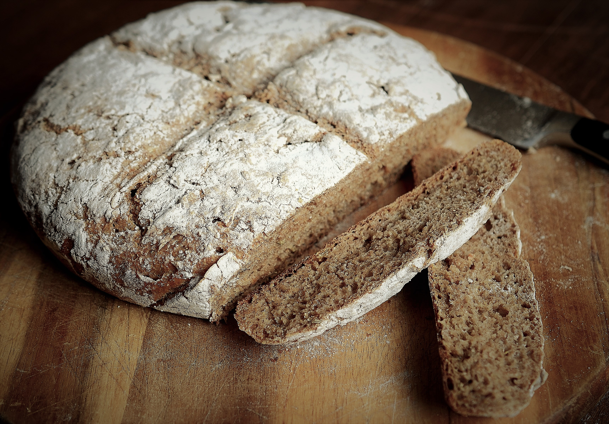
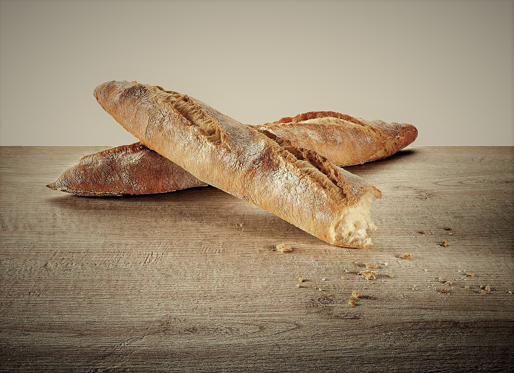
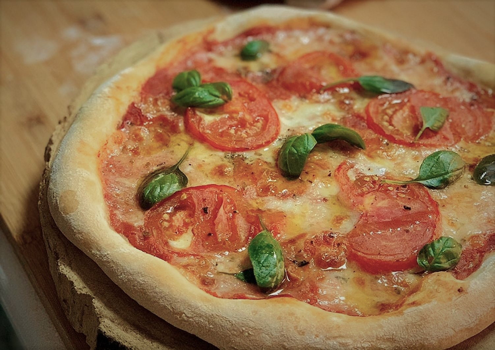

PAN 100% CENTENO

HISTORIA
Composición:
- Proteinas 12,0%
- Hidratos de carbono 65,6%
- Fibra 13,0%
- Grasa 2,0%
Fórmula o porcentaje panadero:
- 100% harina de centeno
- 100% agua
- 8% miel
- 3% sal
- 100% masa madre de centeno
Receta de 1Kg:
- 320g harina de centeno
- 320g agua
- 25g de miel
- 10g sal
- 320g masa madre de centeno
Paso a paso:
- Primero debemos seprara una masa madre de 100% centeno, aplicando la técnica indicada en Inicia tu masa madre, solo que utilizaremos harina de centeno en todos los pasos hasta obtener la cantidad necesaria para la receta.
- Pesamos todos lo ingredientes, los colocamos en un bowl y comenzamos a mezclarlos con una cuchara de madera hasta lograr una masa muy húmeda, sin forma alguna. Lo importante es que no queden grumos. Una vez logrado, enmantecamos y enharinamos un molde para pan o budinera y vertemos la mezcla. Este pan no se puede amasar y se hace en molde porque es inmanejable con las manos.
- Lo cubrimos y lo dejamos levar a temperatura ambiente hasta duplicar (por 2 horas aproximadamente).
- Luego, lo horneamos en horno precalentado a 200 °C por un ahora.
- Es recomendable dejar este pan descansar envuelto en un paño por al menos un dia antes de cortarlo, ya que su miga es muy compacta y húmeda.
Opcional: se pueden colocar en el molde semillas de eneldo kummel para darle un toque más europeo o inclusive en la mezcla de la masa (1 cucharada de té para esta receta).
Y se puede reemplazar entre 20 y 30% de harina de centeno por harina 000 o integral, lo que dará un pan más esponjoso y más esponjoso y más suave.
BARRA RÚSTICA

HISTORIA
Fórmula o porcentaje panadero:
- 90% harina 000
- 10% espelta
- 75% agua
- 2% sal
- 15% masa madre
Receta de 1kg:
- 505g harina 000
- 55g espalta
- 425g agua
- 11g sal
- 75g masa madre
Paso a paso:
- Pesar los ingredientes y reservar una cucharada de agua.
- Dispersar la masa madre en el agua y luego incorporar las harinas. Mezclar hasta lograr una masa homogénia, sin rastros de harina seca.
- Dejar tapado a temperatura ambiente por una hora mientras se completa al autólisis. Disolver la sal en el agua reservada y agregar a la masa. Amasar por unos 5 minutos. Para este pan es recomendable extender la fermentación en bloque en frío por al menos 18 horas y luego continuar con el preformado y formado al día siguiente.
- Desmoldamos la masa sobre la mesada levemente enharinada y dejamos atemperar unos 30 minutos. Luego, la dividimos en porciones más bien rectangulares de 250 gramos y realizamos una forma, simplemente enrollando la masa sobre si misma, sin demasiada fuerza
- Dejaremos descansar los bollos por unos 30 minutos cubiertos por un paño. Pasado el tiempo volvemos a tomar y sobre la mesada, con muy poca harina, hacemos presión en el centro, con ambas manos, y estiramos la masa hacia afuera dándole forma a la barra. Una vez terminadas, las dejamos descansar sobre una couche ("cuna" en francés, que es una tela de lino) enharinamos haciéndole un pliegue entre barra y barra, para evitar que se peguen.
- Descansarán ahí, cubieras, por unas 2 horasa aproximadamente, hasta que estén listas para ser horneadas.
- El horno dene estar precalentado a 230 °C y, para un mejor resultado, es aconsejable utilizar una piedra de horno, que también debe ser precalentada.
- Unos segundos antes de entrar en cocción, debemos hacerles a las barras unos pequeños cortes longitudinales con un lame, para que luego abran y formen la oreja tan característica de este pan.
- Llevar los panes al horno con una pala o tabla, para evitar accidentes y no arruinarlos
- El horneado debe ser con vapor durante los primeros 12 minutos y el resto sin vapor.
El tiempo de horneado variará según el peso de las barras.
PIZZA

HISTORIA
Fórmula o porcentaje panadero:
- 100% harina 000
- 60%a agua
- 3% sal
- 10% masa madre
Receta de 1kg:
- 610g harina 000
- 365g agua
- 18g sal
- 60g masa madre
Paso a paso:
- La masa se prepara fácilmente, mezclando todos los ingredientes desde el comienzo y luego amasando hasta lograr que quede tersa y elástica. Luego la dejaremos levar tapada a temperatura ambiente hasta que duplique su tamaño. La divideremos y haremos bollos de aproximadamente 280g, que volverán a fermentar tapados, pero esta vez en frío por unas 24 a 48hs.
- Retirar del frío los bollos y dejar atemperar por 2 horas.
- Estirar sobre la mesada bien enharinada y colocar la salsa de tomate, un toque de sal, unos pedazos de mozzarella, unas gotas de aceite de oliva de exelente calidad y algunas hojas de albahaca fresca.
- Llevarla al horno a leña, que debe estar a unos 450 °C, y ubicarla sobre la piedra por unos 90 segundos, rotándola de a poco. Si no contamos con uno de estos hornos, proceder con el horno de casa de la misma manera, precalentándolo al maximo. Si tenemos una piedra de horno, deberemos colocarla también desde el momento en que lo encendemos, así se precalienta también. En este caso la cocción llevará entre 15 y 20 minutos.
Para la segunda fermentación es recomendable usar frascos plásticos para cada bollo, ya que son más fáciles de guardar en la heladera.